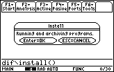
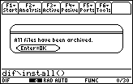

What do I need to run Symbulator?
You need a TI-89 or equivalent calculator with AMS 2.0x or superior, and the DiffEq by Lars Frederiksen.
Suggestion! For information on downloading files to your calculator from a PC or on linking two TI-89s, visit education.ti.com or check your calculator’s user manual. |
What do I load to my calculator?
You must load to your calculator:
From Electrical Engineering section in Download Area, get Symbulator: sq.zip (click here to download right away!)
sq.89g (main programs of Symbulator), by Roberto Perez-Franco. When loaded to your calculator this group will create a folder called SQ with several files inside, and will place in SQ folder a program called install(). This program will archive the Symbulator files to ROM, for speed sake.
From Advanced Math for Engineers section in Download Area, get DiffEq: diffeq.zip (click here to download right away),
diff206.89g, by Lars Frederiksen. When loaded to your calculator this group will create a folder called DIF with several files inside, including a program called install(). This program will archive the DiffEq files to ROM, for speed sake.
According to your needs, you may also want to install some plug-ins.
Warning! 1) Do not change the names of any of the files of DIF and SCS folders. By doing so, you may turn them useless. 2) Before archiving the programs, set the MODE Language to English. If your Language MODE is disabled, leave it as it is. Set the Exact/Aprox MODE to AUTO. Set the Complex MODE to Rectangular. Set the Deg/Rad MODE to RAD. |
Very important! Symbulator and DiffEq are very fast programs. To enjoy their speed, you need to archive the files properly and keep enough free memory (around 180KB) in the RAM. Although, you should not archive these files without using them before, or the calculator will have to compile them every time you run them. When you install Symbulator and DiffEq in your TI-89 or equivalent calculator, follow these procedures: Archiving DiffEq files After loading the diff206.89g to your calculator, run the install() program. It will prepare and archive DiffEq files in your ROM. Just execute following command from the command line: dif\install()  The install program install() and it's sub program archive() can be deleted after installation.  Keep them if you plan to pass the program to a friend using the linking cable.
Archiving Symbulator files After loading the sq.89g to your calculator, run the install() program. It will prepare and archive Symbulator files in your ROM. Just execute following command from the command line: sq\install() After some seconds, it's archived! Keep this program by: Archive sq\install If you want to uninstall Symbulator, use: sq\uninstal |